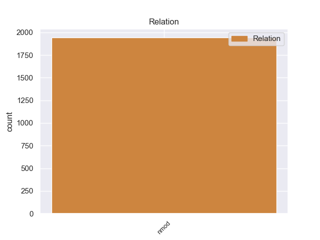
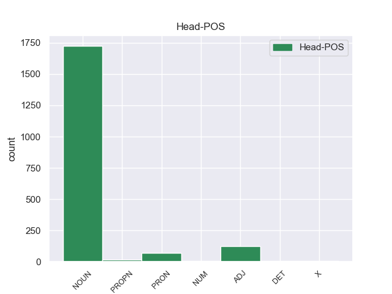
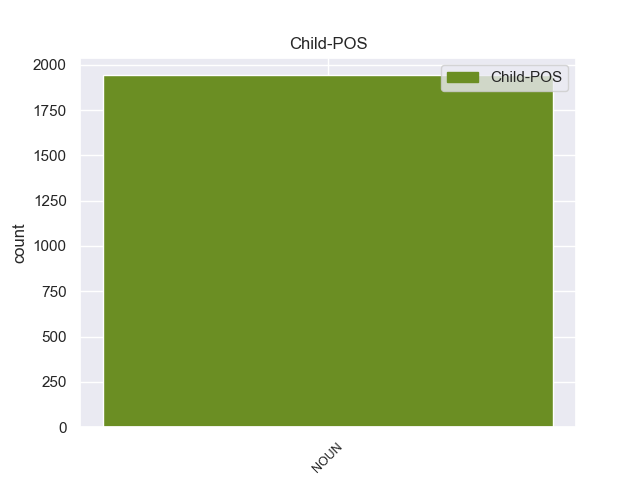

Distribution of features within this leaf



Agreement Rules sorted by frequency.
- When the dependent token is the nominal modifier(nmod) of the head token, and the dependent token is NOUN.
1 Un _ _ _ _ 0 _ _ _
2 buen _ _ _ _ 0 _ _ _
3 almacén almacén NOUN _ Gender=Masc|Number=Sing 0 _ _ _
4 de _ _ _ _ 0 _ _ _
5 maderas _ _ _ _ 0 _ _ _
6 con _ _ _ _ 0 _ _ _
7 mucha _ _ _ _ 0 _ _ _
8 variedad variedad NOUN _ Gender=Fem|Number=Sing 3 nmod _ _
9 y _ _ _ _ 0 _ _ _
10 muy _ _ _ _ 0 _ _ _
11 bien _ _ _ _ 0 _ _ _
12 atendido _ _ _ _ 0 _ _ _
13 . _ _ _ _ 0 _ _ _
Disagree Examples:
1 En _ _ _ _ 0 _ _ _
2 está _ _ _ _ 0 _ _ _
3 ocasión _ _ _ _ 0 _ _ _
4 se _ _ _ _ 0 _ _ _
5 incorporaron _ _ _ _ 0 _ _ _
6 elementos elemento NOUN _ Gender=Masc|Number=Plur 0 _ _ _
7 de _ _ _ _ 0 _ _ _
8 cine cine NOUN _ Gender=Masc|Number=Sing 6 nmod _ _
9 fantástico _ _ _ _ 0 _ _ _
10 , _ _ _ _ 0 _ _ _
11 pues _ _ _ _ 0 _ _ _
12 los _ _ _ _ 0 _ _ _
13 protagonistas _ _ _ _ 0 _ _ _
14 no _ _ _ _ 0 _ _ _
15 deben _ _ _ _ 0 _ _ _
16 enfrentar _ _ _ _ 0 _ _ _
17 se _ _ _ _ 0 _ _ _
18 a _ _ _ _ 0 _ _ _
19 una _ _ _ _ 0 _ _ _
20 bestia _ _ _ _ 0 _ _ _
21 marina _ _ _ _ 0 _ _ _
22 existente _ _ _ _ 0 _ _ _
23 , _ _ _ _ 0 _ _ _
24 sino _ _ _ _ 0 _ _ _
25 a _ _ _ _ 0 _ _ _
26 el _ _ _ _ 0 _ _ _
27 producto _ _ _ _ 0 _ _ _
28 de _ _ _ _ 0 _ _ _
29 un _ _ _ _ 0 _ _ _
30 cruce _ _ _ _ 0 _ _ _
31 de _ _ _ _ 0 _ _ _
32 material _ _ _ _ 0 _ _ _
33 genético _ _ _ _ 0 _ _ _
34 de _ _ _ _ 0 _ _ _
35 un _ _ _ _ 0 _ _ _
36 pez _ _ _ _ 0 _ _ _
37 prehistórico _ _ _ _ 0 _ _ _
38 y _ _ _ _ 0 _ _ _
39 un _ _ _ _ 0 _ _ _
40 pulpo _ _ _ _ 0 _ _ _
41 común _ _ _ _ 0 _ _ _
42 . _ _ _ _ 0 _ _ _
1 El _ _ _ _ 0 _ _ _
2 miércoles _ _ _ _ 0 _ _ _
3 pasado _ _ _ _ 0 _ _ _
4 , _ _ _ _ 0 _ _ _
5 Carlos _ _ _ _ 0 _ _ _
6 Reutemann _ _ _ _ 0 _ _ _
7 decidió _ _ _ _ 0 _ _ _
8 separar _ _ _ _ 0 _ _ _
9 se _ _ _ _ 0 _ _ _
10 de _ _ _ _ 0 _ _ _
11 el _ _ _ _ 0 _ _ _
12 Peronismo _ _ _ _ 0 _ _ _
13 Federal _ _ _ _ 0 _ _ _
14 para _ _ _ _ 0 _ _ _
15 asegurar _ _ _ _ 0 _ _ _
16 el _ _ _ _ 0 _ _ _
17 triunfo _ _ _ _ 0 _ _ _
18 de _ _ _ _ 0 _ _ _
19 el _ _ _ _ 0 _ _ _
20 justicialismo _ _ _ _ 0 _ _ _
21 en _ _ _ _ 0 _ _ _
22 las _ _ _ _ 0 _ _ _
23 elecciones elección NOUN _ Gender=Fem|Number=Plur 0 _ _ _
24 para _ _ _ _ 0 _ _ _
25 gobernador gobernador NOUN _ Gender=Masc|Number=Sing 23 nmod _ _
26 de _ _ _ _ 0 _ _ _
27 Santa _ _ _ _ 0 _ _ _
28 Fe _ _ _ _ 0 _ _ _
29 de _ _ _ _ 0 _ _ _
30 el _ _ _ _ 0 _ _ _
31 año _ _ _ _ 0 _ _ _
32 que _ _ _ _ 0 _ _ _
33 viene _ _ _ _ 0 _ _ _
34 . _ _ _ _ 0 _ _ _
1 El _ _ _ _ 0 _ _ _
2 miércoles _ _ _ _ 0 _ _ _
3 pasado _ _ _ _ 0 _ _ _
4 , _ _ _ _ 0 _ _ _
5 Carlos _ _ _ _ 0 _ _ _
6 Reutemann _ _ _ _ 0 _ _ _
7 decidió _ _ _ _ 0 _ _ _
8 separar _ _ _ _ 0 _ _ _
9 se _ _ _ _ 0 _ _ _
10 de _ _ _ _ 0 _ _ _
11 el _ _ _ _ 0 _ _ _
12 Peronismo _ _ _ _ 0 _ _ _
13 Federal _ _ _ _ 0 _ _ _
14 para _ _ _ _ 0 _ _ _
15 asegurar _ _ _ _ 0 _ _ _
16 el _ _ _ _ 0 _ _ _
17 triunfo _ _ _ _ 0 _ _ _
18 de _ _ _ _ 0 _ _ _
19 el _ _ _ _ 0 _ _ _
20 justicialismo _ _ _ _ 0 _ _ _
21 en _ _ _ _ 0 _ _ _
22 las _ _ _ _ 0 _ _ _
23 elecciones elección NOUN _ Gender=Fem|Number=Plur 0 _ _ _
24 para _ _ _ _ 0 _ _ _
25 gobernador _ _ _ _ 0 _ _ _
26 de _ _ _ _ 0 _ _ _
27 Santa _ _ _ _ 0 _ _ _
28 Fe _ _ _ _ 0 _ _ _
29 de _ _ _ _ 0 _ _ _
30 el _ _ _ _ 0 _ _ _
31 año año NOUN _ Gender=Masc|Number=Sing 23 nmod _ _
32 que _ _ _ _ 0 _ _ _
33 viene _ _ _ _ 0 _ _ _
34 . _ _ _ _ 0 _ _ _
1 El _ _ _ _ 0 _ _ _
2 fin _ _ _ _ 0 _ _ _
3 de _ _ _ _ 0 _ _ _
4 la _ _ _ _ 0 _ _ _
5 prestigiosa _ _ _ _ 0 _ _ _
6 American _ _ _ _ 0 _ _ _
7 Academy _ _ _ _ 0 _ _ _
8 of _ _ _ _ 0 _ _ _
9 Hospitality _ _ _ _ 0 _ _ _
10 Sciences _ _ _ _ 0 _ _ _
11 es _ _ _ _ 0 _ _ _
12 la _ _ _ _ 0 _ _ _
13 distinción _ _ _ _ 0 _ _ _
14 de _ _ _ _ 0 _ _ _
15 la _ _ _ _ 0 _ _ _
16 excelencia excelencia NOUN _ Gender=Fem|Number=Sing 0 _ _ _
17 en _ _ _ _ 0 _ _ _
18 viajes viaje NOUN _ Gender=Masc|Number=Plur 16 nmod _ SpaceAfter=No
19 , _ _ _ _ 0 _ _ _
20 cocina _ _ _ _ 0 _ _ _
21 , _ _ _ _ 0 _ _ _
22 productos _ _ _ _ 0 _ _ _
23 de _ _ _ _ 0 _ _ _
24 lujo _ _ _ _ 0 _ _ _
25 y _ _ _ _ 0 _ _ _
26 servicios _ _ _ _ 0 _ _ _
27 . _ _ _ _ 0 _ _ _
1 El _ _ _ _ 0 _ _ _
2 fin _ _ _ _ 0 _ _ _
3 de _ _ _ _ 0 _ _ _
4 la _ _ _ _ 0 _ _ _
5 prestigiosa _ _ _ _ 0 _ _ _
6 American _ _ _ _ 0 _ _ _
7 Academy _ _ _ _ 0 _ _ _
8 of _ _ _ _ 0 _ _ _
9 Hospitality _ _ _ _ 0 _ _ _
10 Sciences _ _ _ _ 0 _ _ _
11 es _ _ _ _ 0 _ _ _
12 la _ _ _ _ 0 _ _ _
13 distinción _ _ _ _ 0 _ _ _
14 de _ _ _ _ 0 _ _ _
15 la _ _ _ _ 0 _ _ _
16 excelencia _ _ _ _ 0 _ _ _
17 en _ _ _ _ 0 _ _ _
18 viajes _ _ _ _ 0 _ _ _
19 , _ _ _ _ 0 _ _ _
20 cocina _ _ _ _ 0 _ _ _
21 , _ _ _ _ 0 _ _ _
22 productos producto NOUN _ Gender=Masc|Number=Plur 0 _ _ _
23 de _ _ _ _ 0 _ _ _
24 lujo lujo NOUN _ Gender=Masc|Number=Sing 22 nmod _ _
25 y _ _ _ _ 0 _ _ _
26 servicios _ _ _ _ 0 _ _ _
27 . _ _ _ _ 0 _ _ _